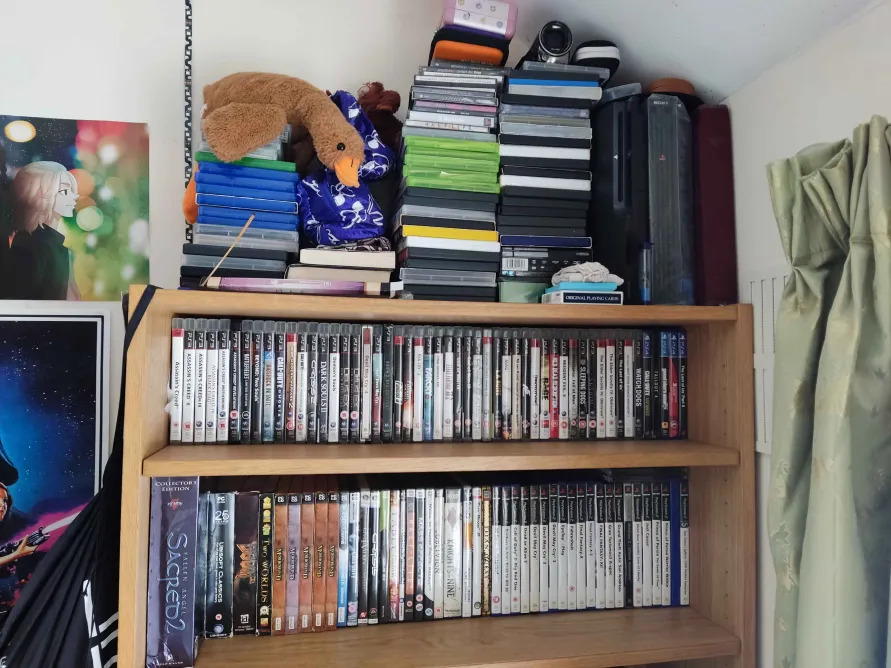
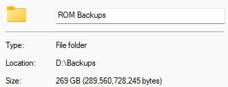
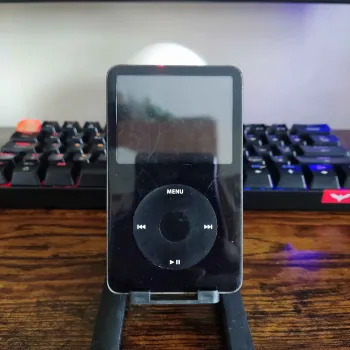

12:31
I grew up with a lot of nintendo stuff. Maybe not the latest and greatest but my GBA SP, DS Lite, Gamecube and Wii gave me what felt like the pinnacle of joy. Notably I did not have many games for each console and had never bought new games. Whatever I had was ample for me though.
But I can't say I approve of Nintendo's business practice's. Video games, although having a short history, have one nonetheless and should be preserved. After all, they created the foundation of what we have today. Games from the earlier eras burst with personality and quirks given through technological limitations. Nintendo attacking webpages hosting their own history and legacy for financial and legal reasons is but a silly decision. They do not provide an alternative but attack their own lineage. It may be a viable legal decision, but is it a moral one?
I have a humble collection of games and have decided to keep backups of a few. (Don't mind the bits of nonsense)
Ripping ROMs really is time-consuming but a necessary evil. Consoles have lifespans too.
Onto something other than games. I really like audio stuff and have been using an external MP3 player for a while (alongside the whole mindfulness thing). Traveling on an empty bus in moments before even the sun decides to wake up with only a cellular device, used for emergencies, packed into the bottom of a worn bag and an audio player passing soft tunes through me is truly a freeing experience.
I have used a few devices over some years, but I feel I have reached the most I would ever need. Admittedly I am not a fan of unnecessarily upgrading. I dislike producing E-waste. The creative zen style m100 was the first player I had used. It being tiny and light made it great for tucking away in a breast pocket. Admittedly using cheap earphones meant they were commonly replaced regardless of the care I took with them. Eventually the headphone jack of the player became damaged making it rather troublesome to use. I took the chance to invest some time into alternative devices. Ones that may be more mod-able, quality in materials and most importantly, has a more capable DAC. I had used cheap earphones outside but at home I used the Sennheiser HD580 Precisions that were gifted to me, and it really opened me up to good audio.
I very rarely impulsively buy anything. I have a rule that If I want anything that required any cost of investment for purposes of entertainment/hobbies, I wait one month. In that time I can consider any and every reason. Though in this case, throw it out the window because as soon as I caught wind of the Ipod Video, it took a matter of 3 days to obsess me
I converted the majority of my music library to FLACs and invested in a pair of 7hz Salnotes Zero, so I could hear the qualities of the Wolfson DAC shine. Though, not the highest end of IEMs, they perform significantly better than the earbuds I had used up till then. This is a purchase I approve and deeply love. Since this is the end of the post, heres a quote:
"A gem cannot be polished without friction, nor a man perfected without trials" - Seneca